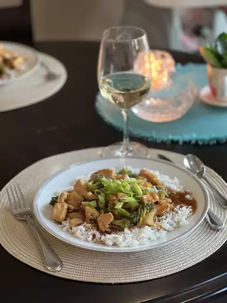

Broccoli and chicken stir fry

Description
An easy dish with Asian inspiration
Prep time : 15 mins
Cook time : 20 mins
Total time : 35 mins
Servings : 3
Ingredients
- 3/3 cup soy sauce
- 1/4 cup brown sugar
- 1/2 tsp ground ginger
- 1 pinch red pepper flakes
- 2 tbsp water
- 2 tbsp cornstarch
- 2 tbsp sesame oil
- 3 skinless, boneless chicken breast halves, cut into chunks
- 1 onion, sliced
- 3 cups broccoli florets
Directions
- Stir soy sauce, brown sugar, ginger, and red pepper flakes together in a bowl to dissolve sugar into the liquid. mis water and cornstarch together in a small bowl; stir with a whisk until cornstarch dissolves completely.
- Heat oil in a large skillet over high heat. Fry chicken and onion in hot oil until the chicken is no longer pink in the center and the onion is tender, 5 to 7 minutes. Stir in broccoli with chicken and onion; sauté until brocoli is hot, about 5 minutes. Push the chicken and vegetable mixture to the side of the skillet.
- Pour the soy sauce mixture into the vacant part of the skillet. Stir the cornstarch slurry into the soy sauce mixture until the color is consistent. Move the chicken and vegetables back into the center of the pan; sauté until the sauce thickens and coats the chicken and vegetables, about 5 minutes more.